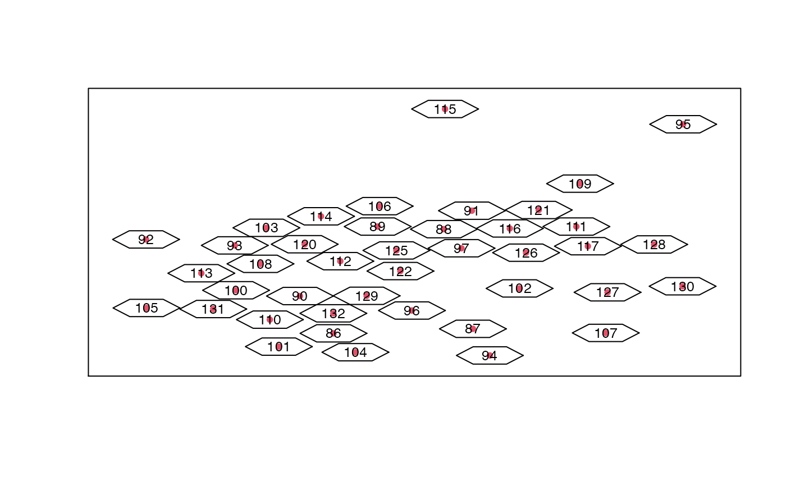
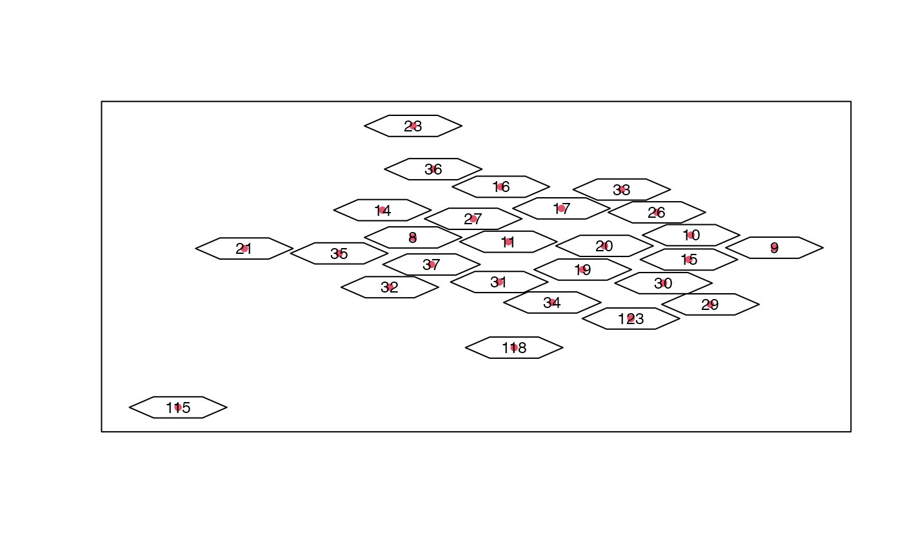
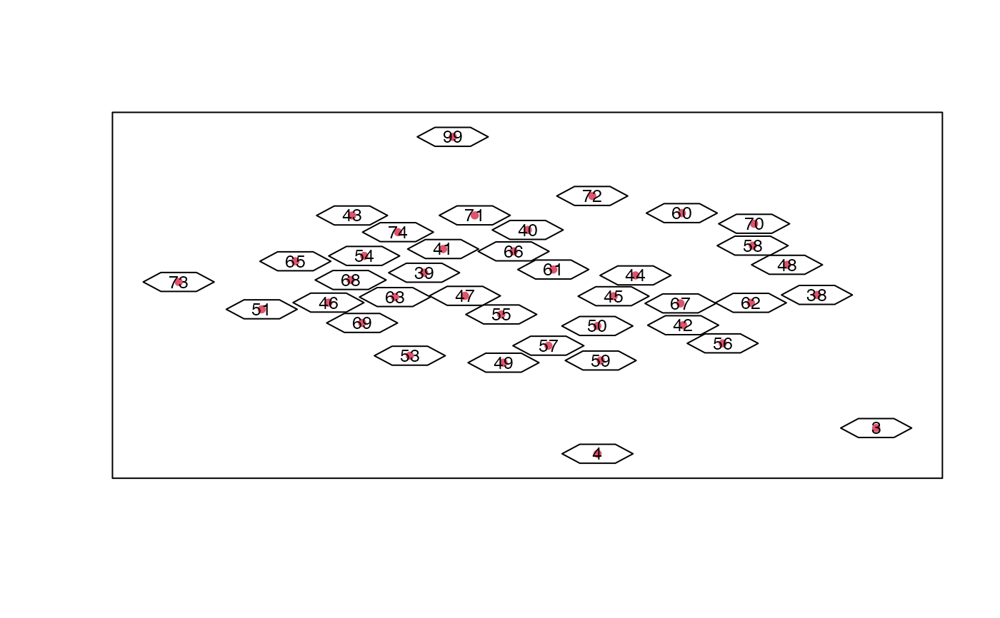
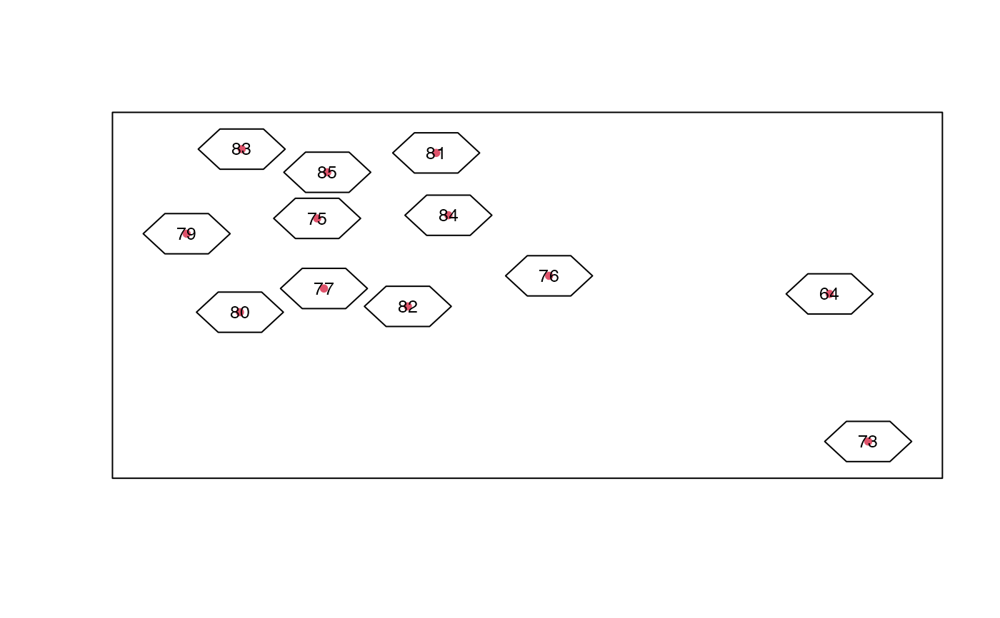
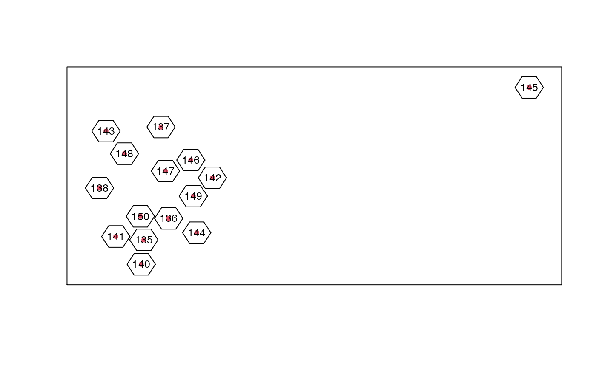
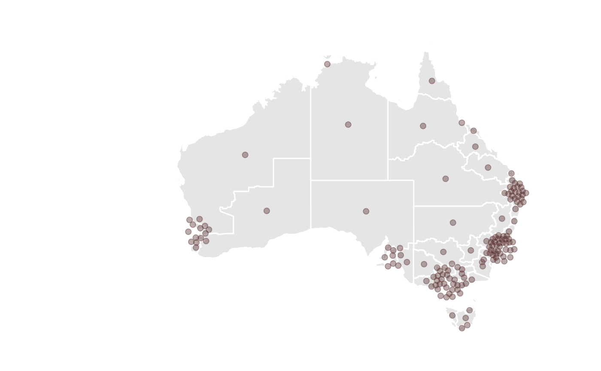

R/cartogram.R
aec_carto_join_f.RdAdd the cartogram locations as new variables to original data and make any of these that were not made equal to the original centroids
aec_carto_join_f(aec_data, aec_carto)subset of data with centroids of electoral divisions
centers
library(dplyr)
library(ggplot2)
nat_map16 <- nat_map_download(2016)
nat_data16 <- nat_data_download(2016)
nat_data16 <- nat_data16 %>% select(-c(x,y)) # remove existing cartogram coordinates
cities <- list(c(151.2, -33.8), # Sydney
c(153.0, -27.5), # Brisbane
c(145.0, -37.8), # Melbourne
c(138.6, -34.9), # Adelaide,
c(115.9, -32.0)) # Perth
expand <- list(c(2,3.8), c(2,3), c(2.6,4.1), c(4,3), c(12,6))
nat_carto <- purrr::map2(.x=cities, .y=expand,
.f=aec_extract_f, aec_data=nat_data16) %>%
purrr::map_df(aec_carto_f) %>%
mutate(region=as.integer(as.character(region))) %>%
rename(id=region)
#> Iteration: 10

#> Iteration: 10

#> Iteration: 10



nat_data_cart <- aec_carto_join_f(nat_data16, nat_carto)
library(ggthemes)
ggplot(data=nat_data16, aes(map_id=id)) +
geom_map(map = nat_map16, fill="grey90", colour="white") +
geom_point(data=nat_data_cart, aes(x=x, y=y), size=2, alpha=0.4,
colour="#572d2c", inherit.aes=FALSE) +
expand_limits(x=nat_map16$long, y=nat_map16$lat) +
theme_map() + coord_equal()
